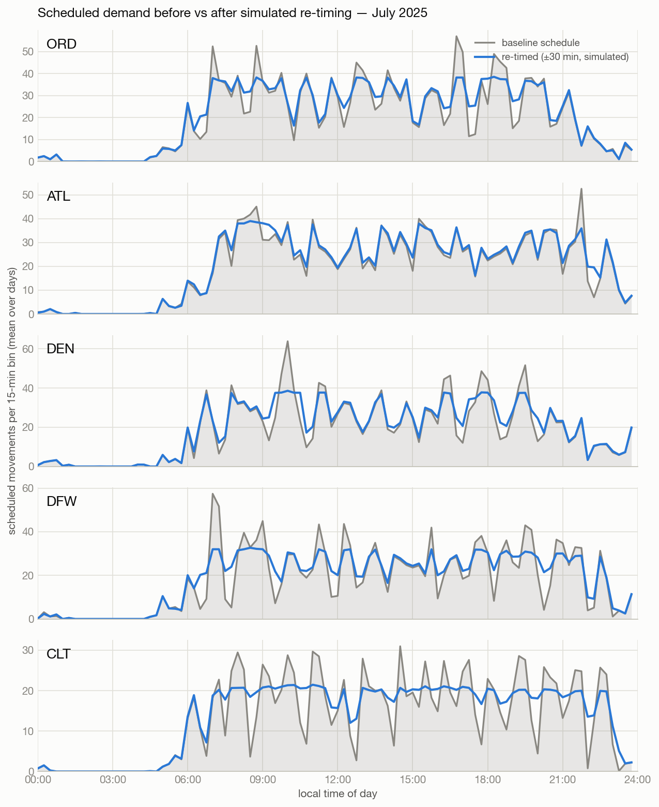
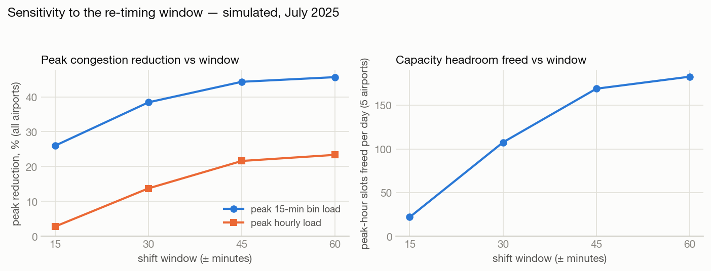

Flight schedule smoothing
A one-day simulation study on historical BTS schedule data — how much peak-hour congestion could small departure-time shifts remove, with zero flights cut?
Motivation
Hub airports schedule flights in tight banks: waves of arrivals followed by waves of departures, maximizing passenger connections but concentrating demand into short spikes. Peak-period congestion at hub airports drives delay propagation across the network and concentrates air traffic control workload; the FAA manages demand at capacity-constrained airports through slot administration (14 CFR Part 93) and Ground Delay Programs, and the economic cost of US flight delay was estimated in the tens of billions of dollars per year by the NEXTOR Total Delay Impact Study (Ball et al., 2010). That context motivates the question — it is not a finding of this study.
The question this study can answer with schedule data alone: if each flight's departure could move by at most a small, fixed window, how much flatter could the demand curve be — with the same flights, the same aircraft rotations, and no cancellations?
Data & scope
- Source: Bureau of Transportation Statistics, Marketing Carrier On-Time Performance — US government public-domain data. 2025, all 12 months scanned for selection.
- Airports: ORD, ATL, DEN, DFW, CLT — the 5 busiest in the US by scheduled movements (departures + arrivals) in 2025.
- Period: July 2025 — the busiest single month at those airports by the same count (279,750 scheduled movements).
- Scheduled times, not actuals — this re-times plans, it does not model delays. Cancelled flights are dropped. Flight count is fixed: nothing is added, removed, or cancelled.
Method in one paragraph
Scheduled movements are binned per airport per 15-minute bin per day (local time). Each flight may shift its whole schedule — departure and arrival together — in 15-minute steps within a window (headline ±30 min). A greedy pass repeatedly moves the most-movable flight out of the fullest bin into the least-loaded reachable bin, accepting a move only if every bin that gains a flight stays strictly below its airport-day's current peak — so peaks can only fall, never migrate. Feasibility: consecutive legs flown by the same tail number must keep a ground time of at least min(original turn, 30 min) — checked across all airports, not just the five studied — and departures never cross midnight. Flights whose feasibility can't be verified are never moved. As an empirical stand-in for unpublished runway capacity, the 95th percentile of observed rolling-hour movements serves as each airport's practical ceiling — an assumption, examined in the limitations.
Results (simulated)

| Airport | Peak 15-min (before → after) | Δ | Peak hour (before → after) | Δ | Slots freed / day | p95 hourly proxy |
|---|---|---|---|---|---|---|
| ORD | 60 → 39.2 | −34.66% | 173.2 → 154 | −11.08% | 19.2 | 158 |
| ATL | 59.3 → 39 | −34.13% | 171.7 → 153.7 | −10.46% | 18 | 150 |
| DEN | 66.4 → 38.7 | −41.66% | 181 → 151.8 | −16.13% | 29.2 | 154 |
| DFW | 59.6 → 33 | −44.7% | 158.8 → 129.1 | −18.69% | 29.7 | 143 |
| CLT | 33.5 → 21.7 | −35.26% | 97 → 85.5 | −11.84% | 11.5 | 93 |
Peak loads are means of daily maxima over the month. "Slots freed" = baseline peak-hour load − re-timed peak-hour load: extra movements schedulable in the formerly busiest hour without exceeding the load the airport already handled at baseline. Because no flights are added or removed, headroom summed over a whole day is conserved — the peak hour is the only place capacity genuinely changes, which is why the metric is defined there and nowhere else.
Why a ±30-minute window?

| Window | Flights shifted | Peak 15-min bin | Peak hour | Slots freed / day (total) |
|---|---|---|---|---|
| ±15 min | 7,846 | −26.0% | −2.81% | 21.9 |
| ±30 min | 21,262 | −38.43% | −13.75% | 107.5 |
| ±45 min | 30,664 | −44.32% | −21.61% | 168.9 |
| ±60 min | 33,270 | −45.65% | −23.36% | 182.7 |
Limitations — read these before quoting any number
- The capacity ceiling is an empirical proxy. The 95th percentile of observed hourly movements is not a runway capacity rating; real declared capacity varies with runway configuration and weather.
- No airspace, weather, gate, crew, or passenger-connection modeling. A shift that is aircraft-feasible may still be infeasible for a crew, a gate, or a connecting bank — and hub banks exist for commercial reasons this study does not price.
- Turnaround feasibility is tail-number-only, with a single global 30-minute minimum; real minimum turns vary by aircraft type, carrier, and station.
- Greedy heuristic, no optimality guarantee — results are a floor for this model, not an operational plan.
- Hourly peaks compress much less than 15-minute peaks. A small window flattens spikes but cannot drain an hour-wide plateau. Both numbers are reported.
- One historical month. Current schedules differ.
Reproduce it
git clone https://github.com/AaravChadha/flight-optimization-analysis cd flight-optimization-analysis python3 -m pip install -r requirements.txt python3 src/fetch_data.py # ~360 MB from BTS (12 monthly zips) python3 src/prepare.py # select airports/month, clean, bin python3 src/metrics.py # optimize at ±15/30/45/60 → results/summary.json python3 src/charts.py # figures python3 -m pytest tests/ -q # sanity assertions
Every knob (window, turnaround minimum, bin width,
capacity percentile, year) lives in src/config.py. All numbers
on this page are generated into results/summary.json by the
pipeline; none are typed by hand. Machine-readable results:
summary.json.
Built by Aarav Chadha as an independent extension of flight-data work from The Data Mine (Purdue). Data: BTS, public domain. Code: MIT.